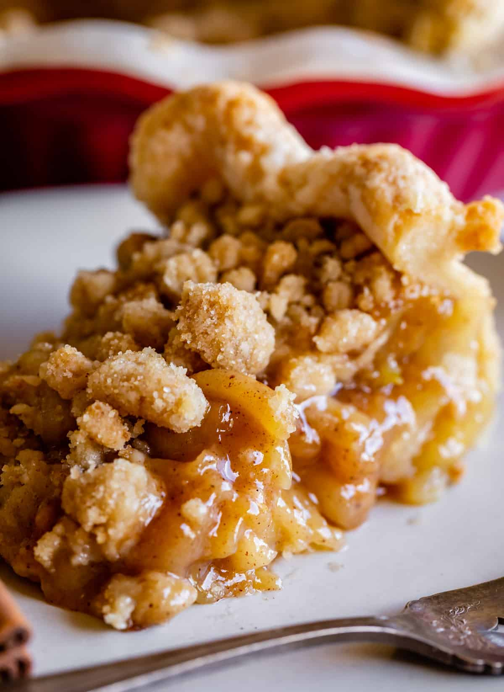

Dutch Apple Crumble Pie
This Dutch Apple Pie Recipe has the BEST apple flavor! A flaky, buttery crust on bottom, cooked apple filling in the center, and the most amazing golden-crisp, buttery crumb streusel topping! This pie is adapted from one of my top recipes, traditional Apple Pie. You are going to love it!

Equipment
- 12 inch high sided skillet
- Microplane grater
- Pie pan
Ingredients
- 1 homemade single pie crust, 1 sheet of pie dough
For the apple filling
- 1/4 teaspoon lemon zest
- juice from half a lemon, 2 tablespoons, no more
- 5 pounds apples, 5 pounds before peeling and coring
- 1/2 cup brown sugar, packed
- 1/2 cup granulated sugar
- 1/3 cup all-purpose flour
- 1/2 teaspoon kosher salt
- 1 & 1/2 teaspoons cinnamon
- 3/4 teaspoon nutmeg
- 1/2 teaspoon cardamom, optional
- 1 teaspoon vanilla
For the sugar crumble
- 1 & 1/2 cups all purpose flour
- 1/3 cup granulated sugar
- 3/4 cup brown sugar, packed
- 1/2 teaspoon kosher salt, use a little less if using table salt
- 3/4 cup butter, melted (1 and 1/2 sticks)